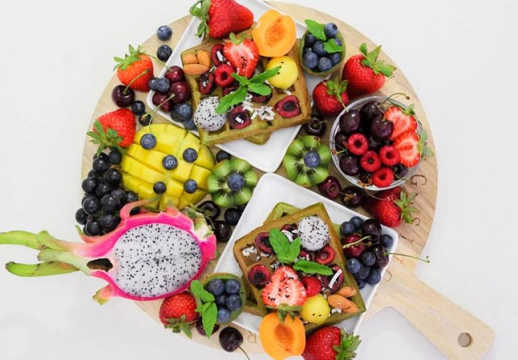
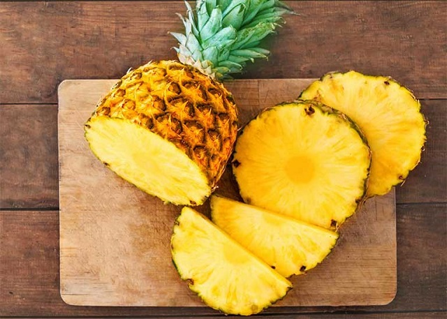
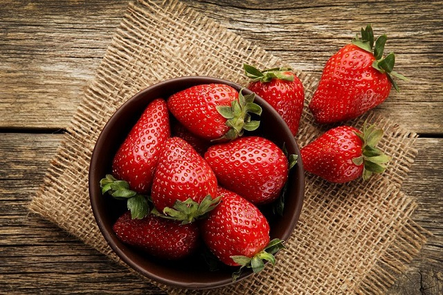
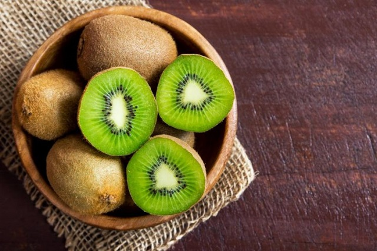
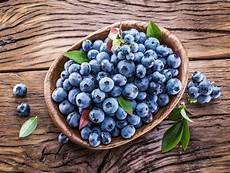
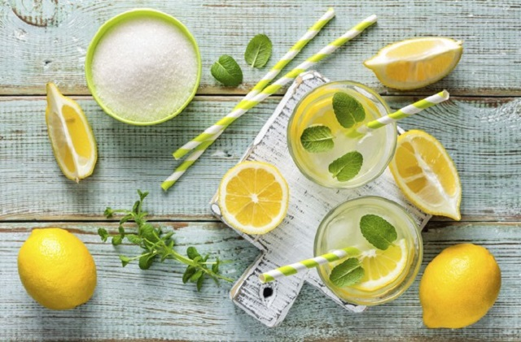

  <div class="container5">
    <div class="blog1s">
      <p class="tieude1s"><a href="https://duongtt.herokuapp.com/shoppingcenter.html">Blog Fruits</a> </p>
      <hr/>
      <div class="noidung2">
        <p style="font-family: sans-serif ;color: black ; text-decoration: underline; font-size: 15px;">HIỂU VỀ TRÁI CÂY</p>
        <h1 style="font-size: 30px">Bạn có biết rằng, ăn trái cây còn có tác dụng chữa bệnh???</h1><br/>
        <br/><br/>
        <p>Ngoài việc bổ sung chất xơ, vitamin cần thiết cho cơ thể thì việc ăn trái cây thường xuyên còn giúp bạn chữa/ phòng chống
          bệnh hiệu quả. Từ những căn bệnh thông thường cho đến bệnh tim, huyết áp cao… cùng Fruits T&T điểm qua những loại quả này nhé.</p><br/>
         <br/><br/>
        <h2 style="text-align: center;font-size: 30px;">Ăn trái cây chữa bệnh và muôn vàn lợi ích khác</h2><br/>
        <h3 class="tieude2">BƯỞI</h3><br/>
         <br/><br/>
        <p>Một nghiên cứu ở Nhật, người ta đã nhận ra rằng với những người thường xuyên ăn bưởi sẽ ít có nguy
          cơ mắc bệnh nan y như ung thư tụy, ung thư tuyến tiền liệt so với những người ăn ít ăn bưởi. Bên
          cạnh đó, hạt của bưởi và những quả họ hàng bưởi sẽ giúp giảm bệnh viêm tiết niệu vô cùng hiệu quả.</p><br/>
        <h3 class="tieude2">DỨA</h3><br/>
        <br/><br/>
        <p>Gần đây, những nhà khoa học tại Anh đã tìm ra chất CCS và chất CCZ hiện đang tồn tại trong quả dứa,
          đây là 2 hợp chất hỗ trợ phòng chống ung thư hiệu quả. Ngoài ra, bromelin trong dứa còn có thể giúp
          điều trị những rối loạn tiêu hóa. Ngày nay, bromelin đã được chững minh là giúp tăng cường hệ miễn
          dịch và giảm việc di căn của tế bào ung thư.</p><br/>
        <h3 class="tieude2">DÂU TÂY</h3><br/>
         <br/><br/>
        <p>Dâu tây chứa rất nhiều vitamin C, loại vitamin giúp kiểm soát được huyết áp trong cơ thể hiệu quả.
          Dâu tây cũng chứa hàm lượng chất xơ và chất chống oxy hóa giúp cân bằng lượng cholesterol có trong
          cơ thể. Từ đó, nhiều nghiên cứu cho rằng, việc ăn dâu tây giúp hỗ trợ hệ tim mạch và ngăn ngừa bệnh tim tốt.</p><br/>
        <h3 class="tieude2">KIWI</h3><br/>
         <br/><br/>
        <p>Có rất nhiều nghiên cứu đã chỉ ra rằng những loại trái cây có hàm lượng vitamin C cao như kiwi giúp
          hỗ trợ được hệ hô hấp hiệu quả. Ăn kiwi thường xuyên sẽ giúp giảm những triệu chứng như hen suyễn,
          khò khè,… Kiwi còn là một loại trái cây có công dụng bảo vệ các tế bào mô khỏi nguy cơ bị ung thư
          và hỗ trợ kéo dài sự sống cho người mắc bệnh ung thư.</p><br/>
        <h3 class="tieude2">VIỆT QUẤT</h3><br/>
         <br/><br/>
        <p>Việt quất được đánh giá là một loại trái cây đứng đầu có khả năng chống oxy hóa mạnh nhất trong các
          loại trái cây. Vậy nên, khi ăn việt quất thường xuyên sẽ có tác dụng hạ đường huyết, làm giảm
          cholesterol hiệu quả. Mỗi ngày, ăn quả việt quất còn giúp kích thích tín hiệu thần kinh của não,
          cải thiện chức năng bộ nhớ và giúp chống stress.</p><br/>
        <h3 class="tieude2">CHANH</h3><br/>
         <br/><br/>
        <p>Nước chanh được chị em đánh giá là một loại nước detox đơn giản nhưng vô cùng hiệu quả với cơ thể.
          Uống nước chanh thường xuyên sẽ giúp làm sạch gan, tăng cường chức năng của gan được hoạt động tốt
          nhất. Bên cạnh đó, nước chanh còn giúp hòa tan sỏi mật, kiểm soát mật thừa. Loại nước này còn giúp
          kháng viêm, tăng cường hệ miễn dịch, giảm đau… hiệu quả.</p><br/>
        <i>Với bài viết này thì bạn đã bỏ túi được những loại trái cây ăn vừa ngon, vừa bổ lại vừa tốt cho sức
          khỏe phải không nào. Nếu bạn muốn mua trái cây tươi, ngon và sạch, đảm bảo an toàn thì liên hệ
          Team_03_T2110E nhé. Tự hào là cửa hàng chuyên bán những trái cây chất lượng, Team_03_T2110E cung cấp cho
          gia đình Việt những loại trái cây tốt nhất. Chúng tôi còn giao hàng tận nơi khi bạn cần.</i><br/>
      </div>
    </div>
  </div>


